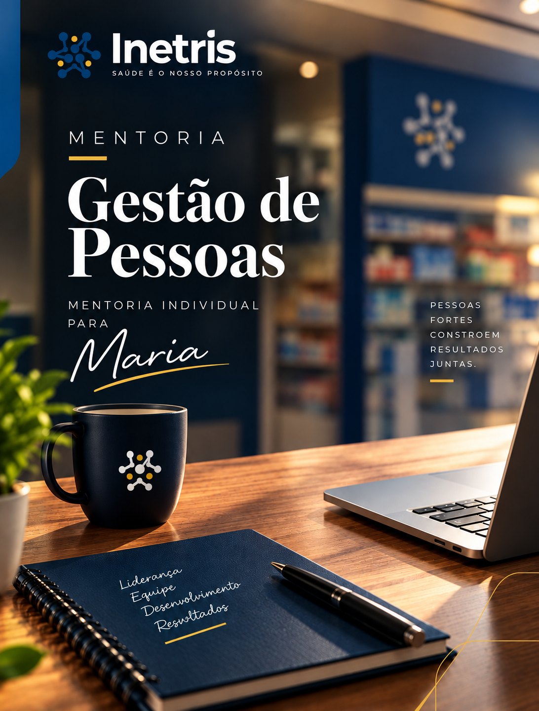

No INETRIS, acreditamos que organizações extraordinárias não são fruto do acaso.
Elas são construídas por pessoas preparadas para evoluir continuamente.
Por isso, nossa atuação vai além da consultoria. Desenvolvemos ambientes onde estratégia, cultura, liderança e gestão caminham juntas para gerar resultados sustentáveis.
Porque toda transformação começa de dentro.
PROPOSTA DE MENTORIA · GESTÃO DE PESSOAS
FARMA E FARMA XINETRIS
Esta proposta não entrega uma lista de treinamentos — entrega um processo de transformação da liderança, acompanhado na prática.

01 APRESENTAÇÃO
Quem Somos
02 RESULTADOS E RELATOS
Experiência que Gera Confiança
Já atuamos em 14 empresas
Atuação nos setores público e privado.
+800 colaboradores impactados
Experiência prática no desenvolvimento de pessoas, lideranças e organizações.
O que nossos clientes dizem
“
Olhando para trás, a minha principal mudança na liderança foi entender que liderar não é só apagar incêndios no dia a dia — que era o que eu mais fazia — mas ter clareza de onde queremos chegar e como conduzir a equipe até lá. Antes, muitas decisões eram tomadas no automático ou no calor do momento para tentar conduzir o mais rápido possível a situação. Hoje, consigo olhar para a situação enxergando o negócio como um todo, com mais estratégia, intenção e paciência para desenvolver as pessoas ao meu redor e tomar a melhor decisão a longo prazo.
Liderança
“
Desde o começo da mentoria, eu passei a olhar a empresa com uma visão de como ela realmente devia ser — como no início, quando eu tinha entrado na empresa. Comecei a pensar no todo, entender melhor o que está funcionando e também qual é o meu papel nisso. A principal mudança, para mim, foi perceber que eu não preciso tentar resolver tudo sozinha, mas, se necessário, eu vou lá e faço; se errar, erro rápido.
Colaborador
03 CAPÍTULO 1
O Que Ouvimos no Diagnóstico
Esta proposta parte do que foi conversado no diagnóstico. Antes de falar em solução, queremos mostrar que compreendemos o momento da Farma e Farma.
O ponto central não está na equipe, e sim na forma como a liderança vem sendo exercida. Maria reconhece isso com clareza — e essa consciência é o melhor ponto de partida para a mudança.
Pontos levantados
- Dificuldade de se posicionar diante dos colaboradores e de ter a liderança respeitada.
- Medo de cobrar com firmeza, por receio de perder funcionários, gerar conflito ou parecer rígida demais.
- Insegurança para tomar certas decisões e falta de confiança no próprio negócio.
- Postura acomodada e comportamentos de autossabotagem que Maria mesma identifica.
- Comunicação frágil entre liderança, subgerência e equipe — como no episódio da colaboradora e da subgerente.
O ponto que muda tudo
Maria percebeu que o problema está mais na própria postura como líder do que na falta de ferramentas. Por isso esta proposta não entrega uma lista de treinamentos — entrega um processo de transformação acompanhado na prática.
04 CAPÍTULO 2
Como o INETRIS Trabalha
Nosso método não se encerra em um treinamento pontual. Ele acompanha a mudança de comportamento ao longo do tempo, dentro da realidade da empresa, em cinco movimentos.
Etapa
O que acontece
Diagnosticar
Entender a fundo a postura de liderança e os pontos que travam a gestão (já iniciado neste diagnóstico).
Desenvolver
Trabalhar, encontro a encontro, a segurança, a autoridade e a comunicação de Maria como líder.
Aplicar
Levar cada desenvolvimento para a rotina real: cobranças, decisões e conversas com a equipe.
Acompanhar
Revisar o que foi aplicado, ajustar a conduta e sustentar a evolução entre os encontros.
Consolidar
Fixar a nova postura de liderança para que ela se mantenha sem depender do acompanhamento.
É esse acompanhamento prático — e não apenas o conteúdo — que diferencia o trabalho do INETRIS.
05 CAPÍTULO 3
O Que Vamos Desenvolver com Maria
Liderança
- Fortalecimento da postura e desenvolvimento de autoridade.
- Posicionamento diante da equipe e segurança para decidir.
- Capacidade de cobrar e estabelecer limites sem perder o relacionamento.
Gestão de pessoas
- Comunicação clara entre liderança, subgerência e colaboradores.
- Condução de conflitos e definição de papéis e responsabilidades.
- Fortalecimento da liderança intermediária (subgerência).
Postura da gestora
- Redução da acomodação e combate à autossabotagem.
- Fortalecimento da confiança e maior protagonismo na condução do negócio.
06 CAPÍTULO 4
Formato do Acompanhamento
Mentoria individual com Maria, conduzida de forma próxima e aplicada à realidade da Farma e Farma.
Item
Como funciona
Modalidade
Mentoria individual com Maria.
Frequência
2 encontros por mês: 1 online e 1 presencial.
Duração do projeto
6 meses de acompanhamento.
Entre os encontros
Aplicação prática na rotina e acompanhamento da evolução.
Condução
Diagnosticar → Desenvolver → Aplicar → Acompanhar → Consolidar.
07 CAPÍTULO 5
Resultados Esperados
Ao fim do processo, Maria terá assumido uma postura de liderança mais firme, segura e estratégica. Na prática:
- Cobrar, direcionar e corrigir sem medo de perder a equipe.
- Decidir com mais segurança e menos dependência da intervenção direta em problemas operacionais.
- Uma comunicação mais clara entre ela, a subgerência e os colaboradores.
- Uma liderança intermediária mais forte e respeitada.
08 CONDIÇÕES COMERCIAIS
Investimento
09 COMPROMISSO INETRIS
Garantia INETRIS
Nosso compromisso com o combinado.

Acreditamos que uma parceria de transformação precisa ter responsabilidade dos dois lados. Por isso:
Se ao final do projeto as entregas e resultados acordados não forem cumpridos pelo INETRIS, garantimos a devolução do investimento, conforme as condições estabelecidas em contrato.
A garantia será vinculada a:
- Entregáveis definidos na proposta e no contrato.
- Prazos acordados.
- Critérios objetivos de cumprimento.
- Responsabilidades de cada parte.
- Condições específicas para aplicação da garantia.
Mais do que prometer transformação, assumimos responsabilidade pelo que foi contratado.
10 CAPÍTULO 7
Nosso Compromisso
O INETRIS não pretende apenas apontar o que precisa mudar. Nosso papel é acompanhar a transformação da liderança dentro da empresa, no dia a dia, até que a nova postura esteja consolidada.
O caminho
Diagnosticar→
Desenvolver→
Aplicar→
Acompanhar→
Consolidar
Estamos à disposição para iniciar esse processo com você.
INETRIS
Instituto Nexus Tríade Saber